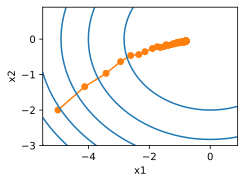
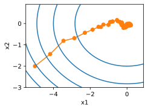

%matplotlib inlineimport d2limport numpy as npimport torchdef f(x): # Objective functionreturn x **2def f_grad(x): # Gradient (derivative) of the objective functionreturn2* x
Basic Gradient Descent
def gd(eta, f_grad): x =10.0 results = [x]for i inrange(10): x -= eta * f_grad(x) results.append(float(x))print(f'epoch 10, x: {x:f}')return resultsresults = gd(0.2, f_grad)
epoch 10, x: 0.060466
Visualization
def show_trace(results, f): n =max(abs(min(results)), abs(max(results))) f_line = d2l.arange(-n, n, 0.01) d2l.set_figsize() d2l.plot([f_line, results], [[f(x) for x in f_line], [ f(x) for x in results]], 'x', 'f(x)', fmts=['-', '-o'])show_trace(results, f)
Learning Rate Effects
Too Small Learning Rate
Slow convergence
More iterations needed
Example with \(\eta = 0.05\):
show_trace(gd(0.05, f_grad), f)
epoch 10, x: 3.486784
Too Large Learning Rate
Solution oscillates
May diverge
Example with \(\eta = 1.1\):
show_trace(gd(1.1, f_grad), f)
epoch 10, x: 61.917364
Local Minima
Nonconvex functions have multiple minima
Example: \(f(x) = x \cdot \cos(cx)\)
High learning rates can lead to poor local minima
c = d2l.tensor(0.15* np.pi)def f(x): # Objective functionreturn x * d2l.cos(c * x)def f_grad(x): # Gradient of the objective functionreturn d2l.cos(c * x) - c * x * d2l.sin(c * x)show_trace(gd(2, f_grad), f)
Polynomial decay: \(\eta(t) = \eta_0 \cdot (\beta t + 1)^{-\alpha}\)
Exponential Decay Implementation
def exponential_lr():global t t +=1return math.exp(-0.1* t)t =1lr = exponential_lrd2l.show_trace_2d(f, d2l.train_2d(sgd, steps=1000, f_grad=f_grad))
epoch 1000, x1: -0.875382, x2: -0.111930

Polynomial Decay Implementation
def polynomial_lr():global t t +=1return (1+0.1* t) ** (-0.5)t =1lr = polynomial_lrd2l.show_trace_2d(f, d2l.train_2d(sgd, steps=50, f_grad=f_grad))
epoch 50, x1: -0.123380, x2: 0.013790

Stochastic Gradients and Finite Samples
Sampling Strategies
With replacement:
Probability of choosing element: \(1 - e^{-1} \approx 0.63\)
Increased variance
Decreased data efficiency
Without replacement:
Better variance properties
More efficient data usage
Default choice in practice
Summary
Key points:
SGD reduces computational cost to \(\mathcal{O}(1)\)
Learning rate scheduling is crucial
Convergence guarantees for convex problems
Sampling without replacement preferred
Practical considerations:
Dynamic learning rates
Trade-offs in sampling strategies
Nonconvex optimization challenges
Exercises
Experiment with learning rate schedules
Analyze noise in gradient updates
Compare sampling strategies
Investigate gradient coordinate scaling
Study local minima in nonconvex functions
Minibatch Stochastic Gradient Descent
Two extremes in gradient-based learning:
Full dataset (gradient descent)
Single examples (stochastic gradient descent)
Each approach has drawbacks:
Gradient descent: Not data efficient for similar data
SGD: Not computationally efficient (poor vectorization)
Minibatch SGD offers a middle ground
Vectorization and Caches
Hardware Considerations
Multiple GPUs and servers require larger minibatches
8 GPUs × 16 servers = minimum batch size of 128
Single GPU/CPU considerations:
Multiple memory types (registers, L1/L2/L3 cache)
Different bandwidth constraints
Memory access patterns matter
Performance Metrics
Modern CPU capabilities:
2GHz CPU with 16 cores and AVX-512
Can process up to 10¹² bytes/second
GPU capabilities:
100× better than CPU
Memory bandwidth limitations:
Midrange server: ~100 GB/s
Memory access width: 64-384 bit
Matrix Multiplication Strategies
Different Approaches
Element-wise computation
Column-wise computation
Full matrix multiplication
Block-wise computation
Performance Comparison
import d2limport torchimport timeimport numpy as npclass Timer:"""Record multiple running times."""def__init__(self):self.times = []self.start()def start(self):"""Start the timer."""self.tik = time.time()def stop(self):"""Stop the timer and record the time in a list."""self.times.append(time.time() -self.tik)returnself.times[-1]def avg(self):"""Return the average time."""returnsum(self.times) /len(self.times)defsum(self):"""Return the sum of time."""returnsum(self.times)def cumsum(self):"""Return the accumulated time."""return torch.tensor(self.times).cumsum().tolist()# Initialize matricesA = torch.zeros(256, 256)B = torch.randn(256, 256)C = torch.randn(256, 256)timer = Timer()
Element-wise Computation
# Compute A = BC one element at a timetimer.start()for i inrange(256):for j inrange(256): A[i, j] = torch.dot(B[i, :], C[:, j])timer.stop()
2.2032790184020996
Column-wise Computation
# Compute A = BC one column at a timetimer.start()for j inrange(256): A[:, j] = torch.mv(B, C[:, j])timer.stop()
0.013736724853515625
Full Matrix Multiplication
# Compute A = BC in one gotimer.start()A = torch.mm(B, C)timer.stop()gigaflops = [0.03/ i for i in timer.times]print(f'performance in Gigaflops: element {gigaflops[0]:.3f}, 'f'column {gigaflops[1]:.3f}, full {gigaflops[2]:.3f}')
performance in Gigaflops: element 0.014, column 2.184, full 36.462
Minibatch Processing
Why Use Minibatches?
Computational efficiency
Statistical properties:
Maintains gradient expectation
Reduces variance by factor of \(b^{-\frac{1}{2}}\)
Popular in: - Compressed sensing - Image denoising
Summary of Loss Terms
Term
Meaning
Benefit
\(\Psi_1\)
HAADF consistency
Uses high SNR elastic signal
\(\Psi_2\)
Spectroscopy fidelity
Honors noisy chemical data
\(\text{TV}(x)\)
Regularization
Noise suppression and smoothness
All terms are necessary for accurate low-dose chemical recovery.
Practical Results
Improves SNR by 300–500%.
Reduces required dose by >10×.
Recovers stoichiometry with <15% error.
Takeaways
Multi-modal fusion = better signal, lower dose.
Expressed as interpretable optimization.
Each term plays a distinct role.
Future outlook: Combine with additional modalities (e.g., ABF, ptychography).
Overview
Tutorial on fusing EELS/X-EDS maps with HAADF for improved chemical resolution
Part 1 of 2: Atomic resolution HAADF and X-EDS dataset of DyScO\(_3\)
Python-based workflow with minimal user input (<10 tunable lines)
Quick transformation of datasets into resolution-enhanced chemical maps
Example Output
Raw vs Fused DyScO\(_3\)
Experimental Requirements
Need both elastic (e.g., HAADF) and inelastic (e.g., EELS/X-EDS) maps
Elastic signal must provide Z-contrast
Inelastic signal must map all chemistries
All maps must have same dimensionality
Recommendation: Use simultaneously collected HAADF signal
Step 1: Python Imports
import data.fusion_utils as utilsfrom scipy.sparse import spdiagsimport matplotlib.pyplot as pltfrom tqdm.notebook import tqdm import numpy as np
Step 2: Data Loading
data = np.load('data/PTO_Trilayer_dataset.npz')# Define element names and their atomic weightselem_names=['Sc', 'Dy', 'O']elem_weights=[21,66,8]# Parse elastic HAADF data and inelastic chemical mapsHAADF = data['HAADF']xx = np.array([],dtype=np.float32)for ee in elem_names: chemMap = data[ee]if chemMap.shape != HAADF.shape:raiseValueError(f"The dimensions of {ee} chemical map do not match HAADF dimensions.") chemMap -= np.min(chemMap); chemMap /= np.max(chemMap) xx = np.concatenate([xx,chemMap.flatten()])
Manassa, Jason, Miti Shah, Min Gee Cho, Zichao Wendy Di, Yi Jiang, Jeffrey A Fessler, Yu-Tsun Shao, Mary C Scott, Jonathan Schwartz, and Robert Hovden. 2024. “Fused Multi-Modal Electron Microscopy.”Elemental Microscopy. https://doi.org/10.69761/MXVR4353.
Schwartz, Jonathan, Zichao Wendy Di, Yi Jiang, Alyssa J. Fielitz, Don-Hyung Ha, Sanjaya D. Perera, Ismail El Baggari, et al. 2022. “Imaging Atomic-Scale Chemistry from Fused Multi-Modal Electron Microscopy.”Npj Computational Materials 8 (11): 1–8. https://doi.org/10.1038/s41524-021-00692-5.